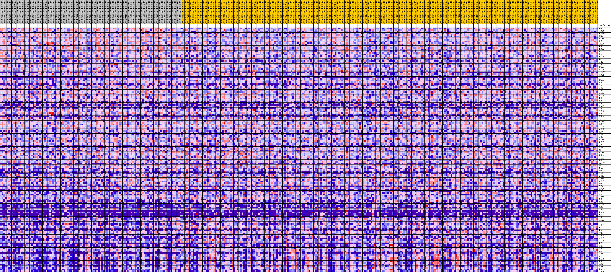
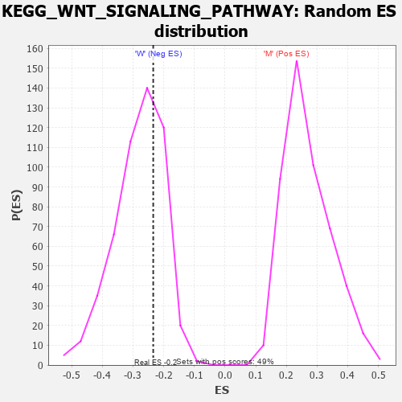

Profile of the Running ES Score & Positions of GeneSet Members on the Rank Ordered List
| Dataset | MUC16.MUC16.cls#M_versus_W.MUC16.cls#M_versus_W_repos |
| Phenotype | MUC16.cls#M_versus_W_repos |
| Upregulated in class | W |
| GeneSet | KEGG_WNT_SIGNALING_PATHWAY |
| Enrichment Score (ES) | -0.23412962 |
| Normalized Enrichment Score (NES) | -0.83516765 |
| Nominal p-value | 0.67836255 |
| FDR q-value | 1.0 |
| FWER p-Value | 0.999 |
| PROBE | DESCRIPTION (from dataset) | GENE SYMBOL | GENE_TITLE | RANK IN GENE LIST | RANK METRIC SCORE | RUNNING ES | CORE ENRICHMENT | |
|---|---|---|---|---|---|---|---|---|
| 1 | PLCB3 | na | 271 | 0.201 | 0.0122 | No | ||
| 2 | CSNK2A2 | na | 588 | 0.173 | 0.0213 | No | ||
| 3 | PPP3CA | na | 722 | 0.165 | 0.0330 | No | ||
| 4 | PPP2R1B | na | 854 | 0.158 | 0.0441 | No | ||
| 5 | RHOA | na | 900 | 0.155 | 0.0565 | No | ||
| 6 | PSEN1 | na | 1277 | 0.139 | 0.0616 | No | ||
| 7 | PPP2R5C | na | 1294 | 0.139 | 0.0731 | No | ||
| 8 | CTBP2 | na | 1428 | 0.133 | 0.0820 | No | ||
| 9 | CHP1 | na | 1690 | 0.126 | 0.0880 | No | ||
| 10 | CACYBP | na | 1735 | 0.124 | 0.0978 | No | ||
| 11 | SMAD2 | na | 1924 | 0.119 | 0.1045 | No | ||
| 12 | MAPK9 | na | 2291 | 0.110 | 0.1073 | No | ||
| 13 | MAPK8 | na | 2419 | 0.107 | 0.1141 | No | ||
| 14 | MAP3K7 | na | 2438 | 0.107 | 0.1229 | No | ||
| 15 | PRKX | na | 2534 | 0.105 | 0.1301 | No | ||
| 16 | DVL1 | na | 2745 | 0.101 | 0.1349 | No | ||
| 17 | FZD5 | na | 2923 | 0.098 | 0.1400 | No | ||
| 18 | NFATC1 | na | 3233 | 0.093 | 0.1423 | No | ||
| 19 | CUL1 | na | 3518 | 0.089 | 0.1448 | No | ||
| 20 | MYC | na | 3574 | 0.088 | 0.1513 | No | ||
| 21 | FOSL1 | na | 3605 | 0.087 | 0.1582 | No | ||
| 22 | ROCK2 | na | 3753 | 0.085 | 0.1628 | No | ||
| 23 | CTBP1 | na | 4153 | 0.080 | 0.1624 | No | ||
| 24 | APC2 | na | 4181 | 0.080 | 0.1687 | No | ||
| 25 | CSNK1A1 | na | 4813 | 0.071 | 0.1633 | No | ||
| 26 | PPP2CA | na | 5180 | 0.067 | 0.1624 | No | ||
| 27 | PPP2R1A | na | 6217 | 0.057 | 0.1485 | No | ||
| 28 | WNT11 | na | 6409 | 0.055 | 0.1496 | No | ||
| 29 | RUVBL1 | na | 6455 | 0.054 | 0.1534 | No | ||
| 30 | PPP2R5D | na | 6555 | 0.053 | 0.1562 | No | ||
| 31 | CER1 | na | 6634 | 0.052 | 0.1592 | No | ||
| 32 | RAC2 | na | 6694 | 0.052 | 0.1625 | No | ||
| 33 | CAMK2D | na | 7028 | 0.049 | 0.1607 | No | ||
| 34 | PPARD | na | 7044 | 0.049 | 0.1646 | No | ||
| 35 | WNT7B | na | 7117 | 0.048 | 0.1673 | No | ||
| 36 | WNT2 | na | 7142 | 0.048 | 0.1710 | No | ||
| 37 | CHD8 | na | 7251 | 0.047 | 0.1730 | No | ||
| 38 | FRAT2 | na | 7624 | 0.044 | 0.1701 | No | ||
| 39 | EP300 | na | 7680 | 0.044 | 0.1728 | No | ||
| 40 | TBL1X | na | 7776 | 0.043 | 0.1747 | No | ||
| 41 | VANGL1 | na | 8124 | 0.040 | 0.1719 | No | ||
| 42 | PPP2CB | na | 8177 | 0.040 | 0.1743 | No | ||
| 43 | GSK3B | na | 8490 | 0.037 | 0.1718 | No | ||
| 44 | NFAT5 | na | 8511 | 0.037 | 0.1746 | No | ||
| 45 | AXIN1 | na | 8675 | 0.035 | 0.1746 | No | ||
| 46 | WNT1 | na | 8805 | 0.034 | 0.1752 | No | ||
| 47 | CCND2 | na | 8860 | 0.034 | 0.1772 | No | ||
| 48 | WNT10A | na | 9663 | 0.027 | 0.1650 | No | ||
| 49 | PLCB4 | na | 9938 | 0.025 | 0.1621 | No | ||
| 50 | FZD9 | na | 10345 | 0.022 | 0.1567 | No | ||
| 51 | CSNK2A1 | na | 10354 | 0.022 | 0.1584 | No | ||
| 52 | TBL1XR1 | na | 10407 | 0.022 | 0.1593 | No | ||
| 53 | SMAD4 | na | 10435 | 0.022 | 0.1607 | No | ||
| 54 | RAC3 | na | 10829 | 0.019 | 0.1551 | No | ||
| 55 | CAMK2B | na | 11529 | 0.014 | 0.1437 | No | ||
| 56 | TP53 | na | 11609 | 0.014 | 0.1434 | No | ||
| 57 | LRP6 | na | 11637 | 0.013 | 0.1440 | No | ||
| 58 | PPP2R5E | na | 12298 | 0.009 | 0.1328 | No | ||
| 59 | CSNK1E | na | 12927 | 0.005 | 0.1219 | No | ||
| 60 | DVL2 | na | 12942 | 0.005 | 0.1220 | No | ||
| 61 | TCF7L2 | na | 13256 | 0.003 | 0.1166 | No | ||
| 62 | FBXW11 | na | 13438 | 0.002 | 0.1134 | No | ||
| 63 | NFATC3 | na | 15123 | -0.001 | 0.0829 | No | ||
| 64 | WNT5A | na | 16494 | -0.008 | 0.0587 | No | ||
| 65 | WNT3 | na | 16797 | -0.009 | 0.0541 | No | ||
| 66 | WNT8B | na | 16799 | -0.009 | 0.0548 | No | ||
| 67 | FZD6 | na | 16835 | -0.010 | 0.0550 | No | ||
| 68 | PORCN | na | 17060 | -0.011 | 0.0519 | No | ||
| 69 | PPP2R5B | na | 17153 | -0.011 | 0.0512 | No | ||
| 70 | CTNNBIP1 | na | 17366 | -0.012 | 0.0484 | No | ||
| 71 | RBX1 | na | 17422 | -0.013 | 0.0484 | No | ||
| 72 | CCND1 | na | 17466 | -0.013 | 0.0488 | No | ||
| 73 | NKD2 | na | 17649 | -0.014 | 0.0466 | No | ||
| 74 | CXXC4 | na | 17899 | -0.015 | 0.0434 | No | ||
| 75 | APC | na | 18080 | -0.016 | 0.0415 | No | ||
| 76 | WNT4 | na | 18134 | -0.016 | 0.0419 | No | ||
| 77 | PPP3R1 | na | 18549 | -0.018 | 0.0360 | No | ||
| 78 | LRP5 | na | 18727 | -0.019 | 0.0344 | No | ||
| 79 | PPP3CC | na | 18833 | -0.020 | 0.0342 | No | ||
| 80 | FZD3 | na | 19180 | -0.021 | 0.0297 | No | ||
| 81 | CSNK2B | na | 20055 | -0.025 | 0.0160 | No | ||
| 82 | BTRC | na | 20825 | -0.029 | 0.0045 | No | ||
| 83 | PPP2R5A | na | 21305 | -0.031 | -0.0015 | No | ||
| 84 | CHP2 | na | 21658 | -0.033 | -0.0051 | No | ||
| 85 | RAC1 | na | 21990 | -0.034 | -0.0082 | No | ||
| 86 | NLK | na | 22339 | -0.035 | -0.0115 | No | ||
| 87 | SFRP4 | na | 22848 | -0.038 | -0.0175 | No | ||
| 88 | PLCB1 | na | 23067 | -0.039 | -0.0182 | No | ||
| 89 | WNT16 | na | 23337 | -0.040 | -0.0197 | No | ||
| 90 | WNT3A | na | 23617 | -0.041 | -0.0213 | No | ||
| 91 | PRKCA | na | 23890 | -0.042 | -0.0226 | No | ||
| 92 | NFATC2 | na | 24748 | -0.045 | -0.0343 | No | ||
| 93 | CREBBP | na | 24772 | -0.045 | -0.0309 | No | ||
| 94 | PRKACB | na | 25430 | -0.048 | -0.0387 | No | ||
| 95 | SKP1 | na | 25518 | -0.048 | -0.0362 | No | ||
| 96 | PLCB2 | na | 25966 | -0.050 | -0.0400 | No | ||
| 97 | SMAD3 | na | 27235 | -0.055 | -0.0584 | No | ||
| 98 | TBL1Y | na | 27298 | -0.055 | -0.0548 | No | ||
| 99 | PRKACA | na | 27466 | -0.055 | -0.0531 | No | ||
| 100 | FZD10 | na | 27971 | -0.057 | -0.0574 | No | ||
| 101 | WNT9A | na | 29025 | -0.061 | -0.0713 | No | ||
| 102 | FRAT1 | na | 29364 | -0.062 | -0.0722 | No | ||
| 103 | DKK2 | na | 30394 | -0.065 | -0.0853 | No | ||
| 104 | CTNNB1 | na | 31234 | -0.068 | -0.0947 | No | ||
| 105 | SENP2 | na | 32006 | -0.070 | -0.1027 | No | ||
| 106 | FZD2 | na | 34365 | -0.078 | -0.1388 | No | ||
| 107 | SFRP2 | na | 34785 | -0.079 | -0.1397 | No | ||
| 108 | WNT5B | na | 35369 | -0.081 | -0.1434 | No | ||
| 109 | WNT10B | na | 35414 | -0.081 | -0.1373 | No | ||
| 110 | WNT6 | na | 35632 | -0.082 | -0.1343 | No | ||
| 111 | WNT7A | na | 36430 | -0.084 | -0.1415 | No | ||
| 112 | CCND3 | na | 36806 | -0.085 | -0.1411 | No | ||
| 113 | WIF1 | na | 37028 | -0.086 | -0.1378 | No | ||
| 114 | PPP3R2 | na | 37199 | -0.086 | -0.1335 | No | ||
| 115 | DKK4 | na | 37476 | -0.087 | -0.1310 | No | ||
| 116 | WNT8A | na | 37669 | -0.088 | -0.1270 | No | ||
| 117 | AXIN2 | na | 37816 | -0.088 | -0.1221 | No | ||
| 118 | JUN | na | 38564 | -0.091 | -0.1279 | No | ||
| 119 | PPP3CB | na | 39713 | -0.095 | -0.1407 | No | ||
| 120 | FZD7 | na | 40034 | -0.096 | -0.1383 | No | ||
| 121 | VANGL2 | na | 40113 | -0.096 | -0.1316 | No | ||
| 122 | TCF7 | na | 40967 | -0.099 | -0.1386 | No | ||
| 123 | DVL3 | na | 41260 | -0.100 | -0.1354 | No | ||
| 124 | MMP7 | na | 42202 | -0.103 | -0.1436 | No | ||
| 125 | PRKCG | na | 42215 | -0.103 | -0.1350 | No | ||
| 126 | ROCK1 | na | 42394 | -0.104 | -0.1294 | No | ||
| 127 | DAAM1 | na | 43918 | -0.109 | -0.1477 | No | ||
| 128 | CSNK1A1L | na | 45639 | -0.116 | -0.1690 | No | ||
| 129 | PRKACG | na | 47650 | -0.126 | -0.1947 | No | ||
| 130 | DKK1 | na | 48760 | -0.132 | -0.2036 | No | ||
| 131 | TCF7L1 | na | 48900 | -0.132 | -0.1948 | No | ||
| 132 | SIAH1 | na | 50413 | -0.142 | -0.2101 | No | ||
| 133 | NKD1 | na | 51031 | -0.148 | -0.2087 | No | ||
| 134 | PRKCB | na | 52433 | -0.162 | -0.2203 | Yes | ||
| 135 | SFRP1 | na | 52451 | -0.162 | -0.2068 | Yes | ||
| 136 | CAMK2G | na | 52501 | -0.163 | -0.1938 | Yes | ||
| 137 | FZD1 | na | 52774 | -0.167 | -0.1845 | Yes | ||
| 138 | FZD8 | na | 53091 | -0.171 | -0.1756 | Yes | ||
| 139 | SFRP5 | na | 53493 | -0.179 | -0.1676 | Yes | ||
| 140 | FZD4 | na | 53541 | -0.180 | -0.1531 | Yes | ||
| 141 | SOX17 | na | 54007 | -0.192 | -0.1451 | Yes | ||
| 142 | NFATC4 | na | 54089 | -0.194 | -0.1300 | Yes | ||
| 143 | MAPK10 | na | 54111 | -0.195 | -0.1138 | Yes | ||
| 144 | DAAM2 | na | 54237 | -0.198 | -0.0991 | Yes | ||
| 145 | PRICKLE1 | na | 54399 | -0.204 | -0.0846 | Yes | ||
| 146 | WNT2B | na | 54454 | -0.206 | -0.0680 | Yes | ||
| 147 | WNT9B | na | 54741 | -0.220 | -0.0544 | Yes | ||
| 148 | LEF1 | na | 54771 | -0.222 | -0.0360 | Yes | ||
| 149 | PRICKLE2 | na | 55162 | -0.256 | -0.0212 | Yes | ||
| 150 | CAMK2A | na | 55224 | -0.271 | 0.0008 | Yes |

